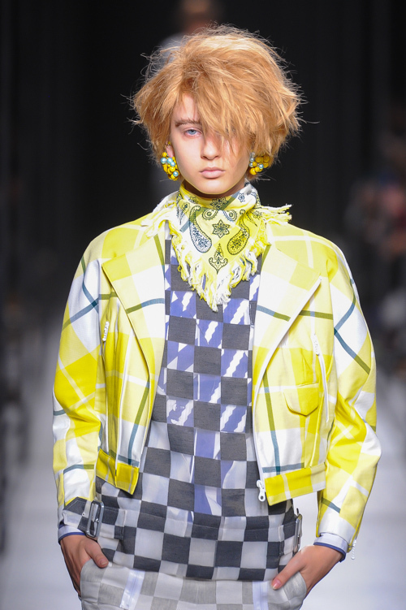

ファセッタズムについて
ファセッタズム(FACETASM)は日本のファッションブランド。デザイナー落合宏理が手掛ける。ブランド名ファセッタズム「」は造語で、「facet」がフランス語でダイアモンドなどの切り子面を意味する単語。それをもとに「様々な顔」「様々な見え方」という意味が込められている。こだわりを持たず、常に新しい顔を持つ。プライドを持って挑戦しつづけること。心に触れ、服って楽しいと感じられるような提案をすることをファセッタズムのポリシーとしている。
ブランドのはじまり
2007年、デザイナーである落合宏理によって「ファセッタズム」設立。
